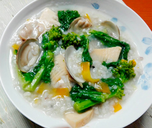

ハマグリと菜の花のリゾット
- 調理時間：30分
- （一人当たり）
- カロリー：238kcal
- たんぱく質：11.2g
- 脂質：1.1g
- 炭水化物：45.2g
- 塩分：1.0g


＜２人分＞
- ごはん
- 200g
- ハマグリ
- 8個
- 菜の花
- 50g
- タケノコ（ゆで）
- 70g
- ニンジン
- 40g
- 大根
- 50g
- 塩、コショウ
- 各少々


- ハマグリは塩抜きし、殻をこすり合わせるように洗う。
- 菜の花は5㎝長さに切る。タケノコは乱切り。ニンジンと大根は短冊切りにする。
- 鍋に水を400～500ml入れて沸騰させる。ハマグリを入れて貝が開くまで加熱する。
貝が開いたら、取り出す。 - ③にタケノコ、ニンジン、大根をいれて、柔らかくなるまで加熱する。
- ごはん、菜の花を加えて、さらに煮込む。仕上げにハマグリをもどし入れる。
塩、コショウで味をととのえ、完成。
※チーズをかけてもおいしい。
ハマグリと菜の花のリゾット
浜にあって「栗」に似ていることから「浜栗」。産卵期は夏なので身が太る春が旬となります。カリウムの働きで体に溜まった毒素を排泄するため、むくみ、のぼせなどを緩和します。デトックスの春にもってこいの食材です。
多くの貝類には、鉄分と赤血球の生成に役立つビタミンB12や葉酸が含まれるので、貧血予防に効果的。また、貝類に含まれる亜鉛と菜の花に含まれるβ-カロテンが免疫力を高めて、アンチエイジング効果を発揮します。